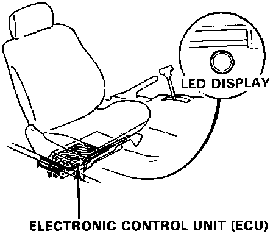

Lock-Up Control Electrical System Inspection
TroubleshootingIf the lock-up control electrical system is suspected to be faulty after referring to the symptom charts, check the following.

1. Check the ECU LED under the passenger seat.
If it blinks, count the number of blinks and inspect according to the troubleshooting chart. Refer to Computers and Control Systems.
2. Check and adjust the throttle control cable.
3. Check for power input signal of the lock-up control solenoid valve.
4. Check the lock-up control solenoid valve.